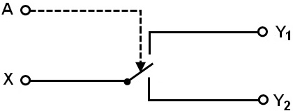
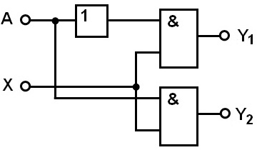
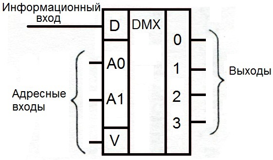
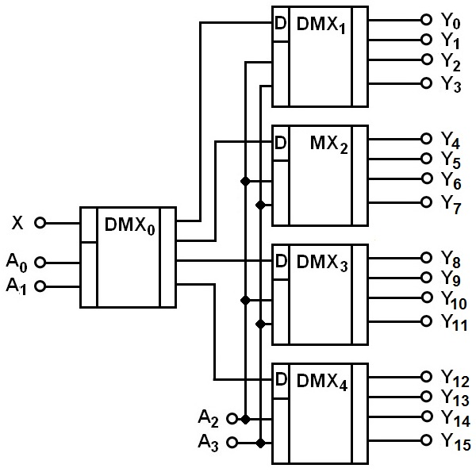

Демультиплексоры
Демультиплексор - логическое устройство, в котором сигналы с одного информационного входа, поступают в желаемой последовательности по нескольким выходам в зависимости от кода на адресных шинах. Таким образом, демультиплексор в функциональном отношении противоположен мультиплексору. Демультиплексоры обозначают через DMX или DMS.
Если соотношение между числом выходов n и числом адресных входов m определяется равенством n=2m, то такой демультиплексор называется полным, при n< 2m демультиплексор является неполным.
Демультиплексор с двумя выходами условно можно рассмотреть в виде коммутатора (рис. 1). Состояние его входов и выходов приведено в таблице1.

Рис. 1 - Модель демультиплексора
Таблица 1
| Адресный вход А | Выход Y1 | Выход Y2 |
|---|---|---|
| 0 | X | 0 |
| 1 | 0 | X |
Из этой таблицы следует:
Y1=X•А
Y2 = X•А
т. е. реализовать такое устройство можно так, как показано на рис. 2.

Рис. 2 - Реализация демультиплексора с двумя выходами
Условное графическое обозначачение демультиплексора показано на рис. 3 .

Рис. 3 - Условное графическое обозначачение демультиплексора
Для наращивания числа выходов демультиплексора используют каскадное включение демультиплексоров. В качестве примера (рис. 4) рассмотрим построение демультиплексоров с 16 выходами (1→16) на основе демультиплексоров с 4 выходами (1→4).

Рис. 4 - Каскадное включение демультиплексоров
При наличии на адресных шинах А0 и А1 нулей информационный вход X подключен к верхнему выходу DМХ0 и в зависимости от состояния адресных шин А2 и А3 он может быть подключен к одному из выходов DMX1. Так, при А2 = А3 = 0 вход X подключен к Y0. При А0 = 1 и А1 = 0 вход X подключен к DMX2, в зависимости от состояния А2 и А3 вход соединяется с одним из выходов Y4 - Y7 и т.д.
Источники
pue8.ru - Мультиплексоры и демультиплексоры: схемы, принцип работы